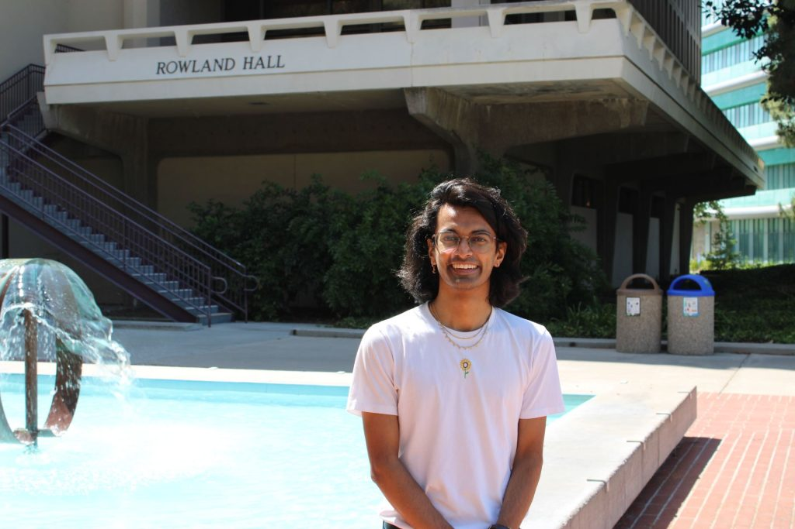
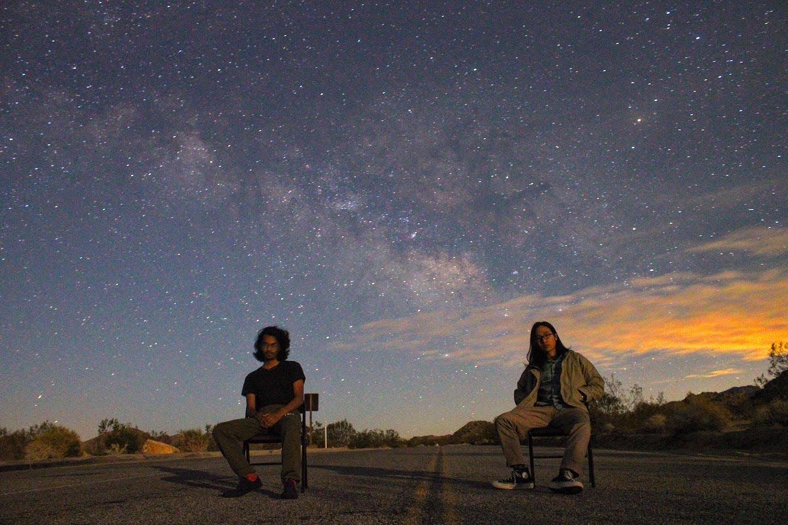
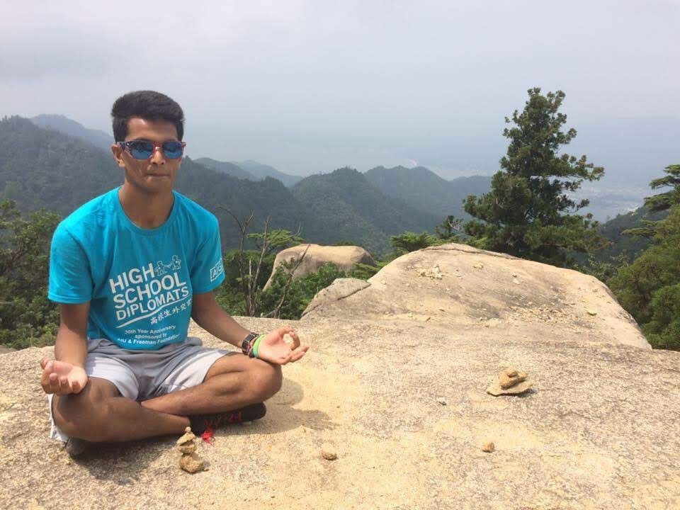

About Me

I am originally from Princeton, New Jersey, and found my way to higher levels of mathematics by reading about Nash's Theorem in an economics class. I've bounced around a lot academically:
- Partially supported by an NSF RTG through the Southern California Geometry and Topology Center
- Howard Tucker Fellowship
Outside of mathematics, I love playing Go, dancing (breakin', bhangra, bollywood, and hip-hop), listening to music, watching movies, and reading. I also have a sporadically updated YouTube series In My Room.

In my youth, I was lucky to have participated in some really formative programs: German-American Partnership Program and High School Diplomats, where I was a high school exchange student to Germany and Japan, respectively, between 2015 and 2016.

Friends
I have been incredibly lucky to be supported by a bunch of wonderful folks, both in the world of mathematics and out. I encourage visiting their websites as well. Here's a few really formative mentors of mine:
- Jesse Wolfson, my Ph.D. advisor
- Edray Herber Goins, my undergraduate advisor and mentor.
- Konrad Aguilar, an early graduate mentor and research advisor.
- Francis Su, mentor and author of one of my favorite books
Here's a little snapshot of my academic circle, some of the folks I've worked closely with and learned from during graduate school:
Here's also a few of my close friends!
- Mythili Vinnakota, an environmental economist at the Institute for Policy Integrity at NYU Law School (and also, my sister!)
- Xander Koo, a Ph.D. student in Human Centered Computing at Georgia Tech
- Max Bahar, a data scientist and M.S. student at Harvard University
- Samuel So, a Ph.D. student in Human Centered Design and Engineering at University of Washington
- reach out if you'd like to be added :)